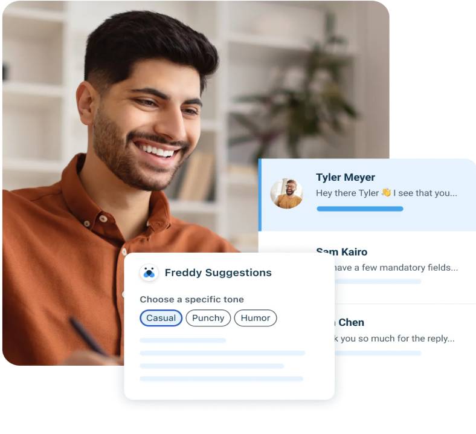

Envie d’en finir avec la complexité ? Rendez-vous au Refresh Virtual
Summit le 23 juin !
Les logiciels ne devraient
pas être un obstacles à un service exceptionnel.
Logiciel de service client et IT alimenté par l’IA, aussi puissant
que facile à utiliser.

Utilisé par plus de 73 000 entreprises dans le monde entier.